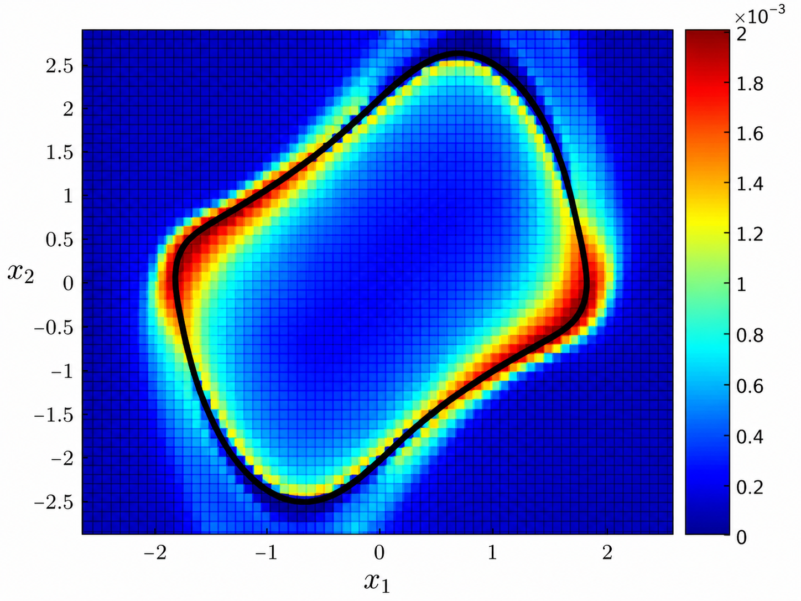
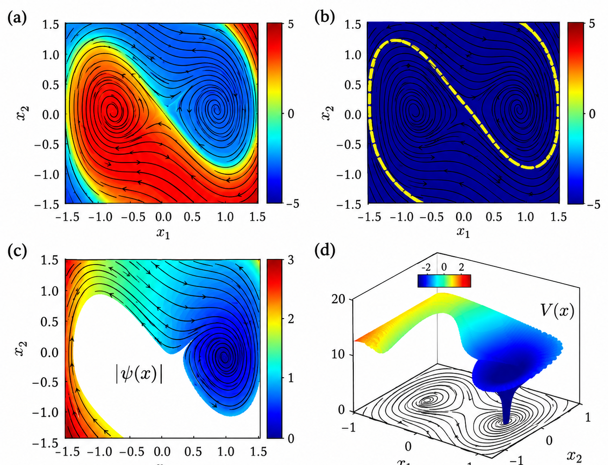
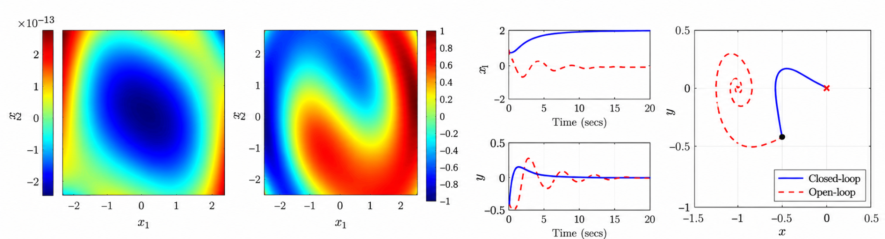
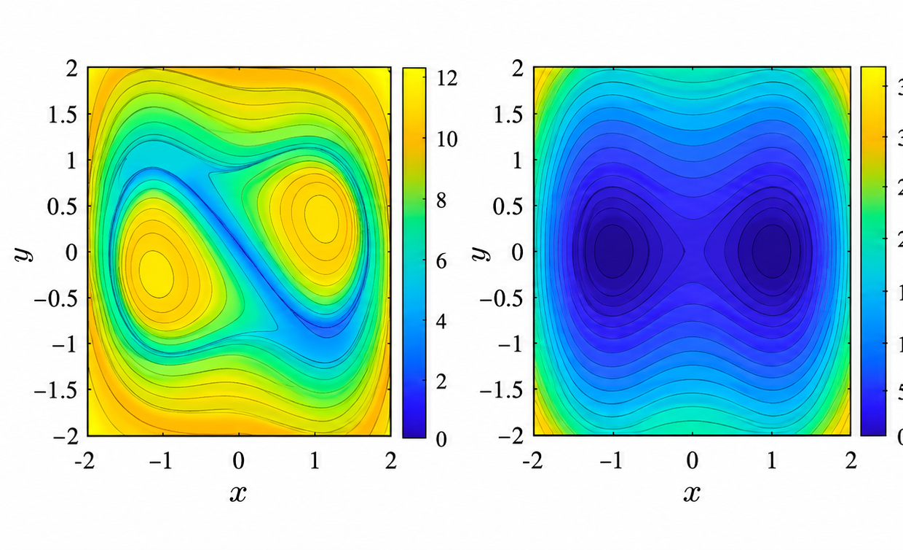
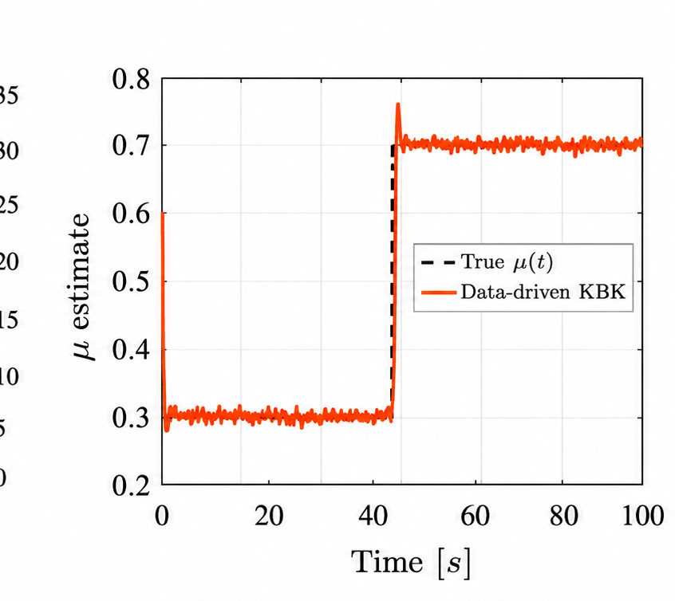

Operator-Theoretic Methods for Nonlinear Dynamics and Control
Spectral Representations, Stability, Hamilton–Jacobi Theory, Reachability, and Nonlinear Estimation
Research Overview
Nonlinear dynamical systems exhibit complex behavior that is often difficult to characterize using conventional state-space methods. Operator-theoretic approaches provide an alternative perspective by studying how observables and probability densities evolve under nonlinear dynamics.
Our research develops mathematical foundations and computational methods based on the Koopman and Perron–Frobenius operators. These methods connect nonlinear dynamical systems with linear operator theory, spectral analysis, convex optimization, and Hamilton–Jacobi equations.
A central objective is to exploit this structure to develop scalable computational tools with rigorous guarantees for stability, optimality, safety, and uncertainty quantification.
Rather than treating these as separate problems, our work investigates their common mathematical foundations through operator duality, eigenfunctions, resolvents, and variational formulations.
01 / Operator foundations
Operator Duality, Stability, and Convex Optimal Control
The Koopman operator evolves observables, while the Perron–Frobenius operator transports measures and probability densities. Their duality relates the evolution of a measured quantity to the evolution of an ensemble of states.
Our foundational work develops Lyapunov measures for almost-everywhere stability of attractor sets. This measure-theoretic counterpart to Lyapunov functions connects stability analysis with density transport and computational methods for stabilizing feedback.
We use this perspective to formulate deterministic and stochastic optimal control as convex optimization problems over densities. Transfer-operator approximations make the formulations computationally accessible, including problems with safety constraints. Guarantees depend on the formulation's assumptions and the accuracy of the finite-dimensional approximation.
Featured Publications


Lyapunov measure for the Van der Pol oscillator, illustrating a measure-theoretic characterization of nonlinear dynamical behavior.
Full-resolution figure02 / Spectrum and geometry
Koopman Spectral Theory and Eigenfunction Computation
Koopman eigenfunctions provide intrinsic coordinates in which observables evolve exponentially. Under suitable spectral and regularity assumptions, their level sets reveal invariant manifolds and stability boundaries; their magnitudes support Lyapunov constructions and the study of regions of attraction.
Our computational work uses path integrals along characteristic flows, resolvent operators, variational formulations, and reproducing kernel Hilbert spaces (RKHS). These methods target eigenfunction equations directly, without requiring an explicit discretization of the full Koopman operator.
Recent kernel methods approximate the nonlinear correction to principal eigenfunctions. The certified-Lyapunov construction combines approximation error bounds with continuous piecewise affine verification. Related transport-equation work connects variational, Green's-function, and characteristic-resolvent constructions, with equivalence only under the stated hypotheses.
Featured Publications


Koopman spectral characterization of the Duffing oscillator. Eigenfunctions reveal invariant geometric structures, including stable manifolds, and provide a basis for constructing Lyapunov functions.
(a) Real eigenfunction for λ = 0.78 at (0, 0); (b) its zero level set representing the stable manifold; (c) complex eigenfunction magnitude for λ = −0.25 ± 1.39j at (1, 0); (d) a Lyapunov function obtained from (c).
Full-resolution figure03 / Value functions and feedback
Koopman Operators, Hamilton–Jacobi Theory, and Optimal Control
Hamilton–Jacobi equations encode value functions for nonlinear optimal control and related systems problems. Their solutions can be studied through Lagrangian submanifolds of an associated Hamiltonian dynamical system.
Our work connects these submanifolds to Koopman spectral analysis. Eigenfunctions of the uncontrolled dynamics or the associated Hamiltonian system provide two routes to approximating Hamilton–Jacobi solutions, bringing spectral coordinates into nonlinear feedback design.
The published framework develops convex optimization-based approximations of eigenfunctions and Lagrangian submanifolds with convergence analysis under its assumptions. It provides a structural extension of linear-system ideas, rather than a claim that every nonlinear control problem becomes exactly linear.
Featured Publications
- When Koopman Meets Hamilton and Jacobi (TAC, 2025)
- Data-driven feedback stabilization using Koopman operator (book chapter; citation note below)


Koopman eigenfunctions and nonlinear control of the Duffing oscillator. Spectral representations provide a framework for studying nonlinear dynamics and designing feedback control.
The heatmaps correspond to λ1 = 1 and λ2 = 0.93. Time histories and phase-plane trajectories compare closed-loop (solid blue) and open-loop (dashed red) responses.
Full-resolution figure04 / Reachable sets and certificates
Spectral Reachability, Supereigenfunctions, and Safety
Spectral Koopman–Hopf methods connect Koopman coordinates with Hamilton–Jacobi value functions for finite-time control. The adversarial extension studies Hamilton–Jacobi–Isaacs reachability with control and disturbance inputs, using spectral projections and Hamiltonian bounds to approximate value functions and backward reachable sets.
Supereigenfunctions replace eigenfunction equalities with inequalities that bound growth. For a nonnegative observable, a generator inequality such as Lψ ≤ λψ describes an exponential envelope when the relevant domain and regularity conditions hold. These envelopes connect stability, safety, and uncertainty propagation.
Ongoing research. The D2C preprint develops trajectory-based supereigenfunction certificates, including resolvent/Gramian constructions. Finite-time and stochastic reachability certificates are continuing research directions; we distinguish these aims from the published optimal-control results and the accepted adversarial-reachability work.
Featured Publications
- Spectral Koopman-Hopf Formula (L-CSS, 2026)
- Spectral Koopman-Hopf Formula for Reachability with Adversary (accepted, CDC 2026)
- Data-to-Certificates (D2C): Koopman Supereigenfunctions for Stability, Safety, and Control (preprint, under review)


Supereigenfunctions for the Duffing oscillator with nonzero envelope rates λ1 = 0.1 and λ2 = −0.1, illustrating expanding and contracting directions.
Full-resolution figure05 / Stochastic dynamics and inference
Stochastic Koopman Operators and Nonlinear Estimation
For stochastic systems, Koopman operators propagate expected observables. Their generators include drift and diffusion terms. Feynman–Kac representations express solutions of the associated equations through expectations over stochastic trajectories, linking stochastic eigenfunctions to path-integral computation.
Our stochastic eigenfunction work combines Galerkin approximation with Monte Carlo evaluation. Complementary kernel research investigates stochastic resolvents and RKHS approximation, separating function-approximation error from sampling error under the specified assumptions.
The Kalman–Bucy–Koopman (KBK) filter connects spectral representations to nonlinear state and parameter estimation. It parameterizes a Hamilton–Jacobi estimation value function in Koopman coordinates, yielding a Riccati-type evolution. The parameter-tracking example illustrates this developing connection between operator theory, Hamilton–Jacobi estimation, and filtering.
Preprints. The stochastic-kernel framework and KBK filter are presented as preprint research, separate from the Feynman–Kac journal contribution.
Featured Publications
- Computation of Koopman Eigenfunctions for Stochastic Systems via Feynman-Kac Formula (L-CSS, 2026)
- Kernel Methods for Stochastic Dynamical Systems with Application to Koopman Eigenfunctions (preprint, 2026)
- Discovering the Kalman-Bucy-Koopman Filter (preprint, under review)


Kalman–Bucy–Koopman filter for online parameter estimation. The data-driven estimate tracks an abrupt change in the friction coefficient, demonstrating adaptive estimation under changing system dynamics.
Full-resolution figureSelected Publications
Complete bibliographyOperator Duality, Stability & Control
Published / Journal / 2008
U. Vaidya and P. G. Mehta, Lyapunov measure for almost everywhere stability, IEEE Transactions on Automatic Control, Vol 53, pp. 307-323, 2008.
Published / Journal / 2010
U. Vaidya, P. G. Mehta and U. Shanbhag, Nonlinear stabilization via control Lyapunov measure, IEEE Transactions on Automatic Control, Vol 55, pp. 1314-1328, 2010.
Published / Journal / 2010
R. Rajaram, U. Vaidya, M. Fardad, and B. Ganapathaysubramanian, Almost Everywhere stability: Linear transfer operator approach, Journal of Mathematical analysis and applications, Vol 368, pp. 144-156, 2010.
Published / Journal / 2014
A. Raghunathan and U. Vaidya, Optimal stabilization using Lyapunov measures, IEEE Transactions on Automatic Control, 2014.
Published / Conference / 2015
U. Vaidya, Stochastic stability analysis of the discrete-time system using Lyapunov measure, American Control Conference, 2015.
Published / 2022
B. Huang and U. Vaidya, Convex Approach to data-driven optimal control via Perron-Frobenius and Koopman operator, IEEE Transactions on Automatic Control, 2022.
Published / 2024
U Vaidya, D Tellez-Castro, Data-Driven Stochastic Optimal Control With Safety Constraints Using Linear Transfer Operators, IEEE Transactions on Automatic Control 69 (4), 2100-2115.
Spectral Theory & Eigenfunctions
Published online / Journal / 2027 volume
P. Giesl, S. Hafstein, B. Hamzi, J. Lee, H. Owhadi, G. Santin, and U. Vaidya, Kernel Methods for the Construction of Certified Lyapunov Functions via Approximate Koopman Eigenfunctions, Journal of Computational Physics 568, 115362, 2027.
Published online / Journal / 2026
Boumediene Hamzi, Houman Owhadi, and Umesh Vaidya, Kernel Methods for Some Transport Equations with Application to Learning Kernels for the Approximation of Koopman Eigenfunctions: A Unified Approach via Variational Methods, Green's Functions and the Method of Characteristics, Physica D: Nonlinear Phenomena 496, 135315, 2026.
Published / Journal / 2025
Jonghyeon Lee, Boumediene Hamzi, Boya Hou, Houman Owhadi, Gabriele Santin, and Umesh Vaidya, Kernel Methods for the Approximation of the Eigenfunctions of the Koopman Operator, Physica D: Nonlinear Phenomena, 2025.
Published / CDC 2023
Shankar Deka, Sriram Subhramanian, Umesh Vaidya, Path-Integral Formula for Computing Koopman Eigenfunctions, IEEE Control and Decision Conference, 2023.
Hamilton–Jacobi Theory & Feedback
Published / 2025
Umesh Vaidya, When Koopman meets Hamilton and Jacobi, IEEE Transactions on Automatic Control, 2025.
Book chapter / Legacy citation; see note
B. Huang and U. Vaidya, Data-driven feedback stabilization using Koopman operator, Book Chapter: Koopman Operator for Control, 2019.
Citation note
The citation above is preserved from the original research page. Springer lists the chapter as Data-Driven Nonlinear Stabilization Using Koopman Operator by Bowen Huang, Xu Ma, and Umesh Vaidya, pp. 313-334, in the 2020 volume The Koopman Operator in Systems and Control.
Reachability & Safety
Published / Journal / 2026
Sarang Sutavani, Sriram S. K. S. Narayanan, and Umesh Vaidya, Spectral Koopman-Hopf Formula, IEEE Control Systems Letters, 2026.
Accepted / CDC 2026
Sarang Sutavani and Umesh Vaidya, Spectral Koopman Hopf formula for Reachability with Adversary, Accepted for publication in IEEE Control and Decision Conference, 2026.
Preprint / Under journal review / 2026
Umesh Vaidya, Data-to-Certificates (D2C): Koopman Supereigenfunctions for Stability, Safety, and Control, preprint, 2026.
Stochastic Operators & Estimation
Journal article / 2026
Boumediene Hamzi and Umesh Vaidya, Computation of Koopman Eigenfunctions for Stochastic Systems via Feynman-Kac Formula, IEEE Control Systems Letters, 2026.
The laboratory bibliography also lists CDC 2026. Conference proceedings metadata remains to be confirmed.
Preprint / 2026
Boumediene Hamzi, Houman Owhadi, and Umesh Vaidya, Kernel Methods for Stochastic Dynamical Systems with Application to Koopman Eigenfunctions: Feynman-Kac Representations and RKHS Approximation, arXiv:2603.01077, 2026.
Preprint / Under review / 2026
Umesh Vaidya, Discovering the Kalman-Bucy-Koopman Filter, arXiv:2606.30487, 2026.
Toward Scalable and Certifiable Nonlinear Systems Analysis
The long-term goal of our operator-theoretic research is to develop a unified computational framework for nonlinear dynamical systems that combines the expressive power of spectral representations with rigorous guarantees.
By connecting Koopman and Perron–Frobenius operators to Hamilton–Jacobi equations, Lyapunov theory, reachability, and stochastic estimation, we seek to bridge fundamental mathematical theory with computational methods for complex dynamical systems.
These ideas provide foundations for research across autonomous robotics, networked systems, power systems, and safety-critical control.